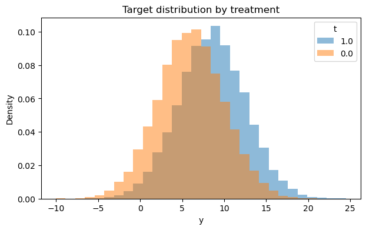
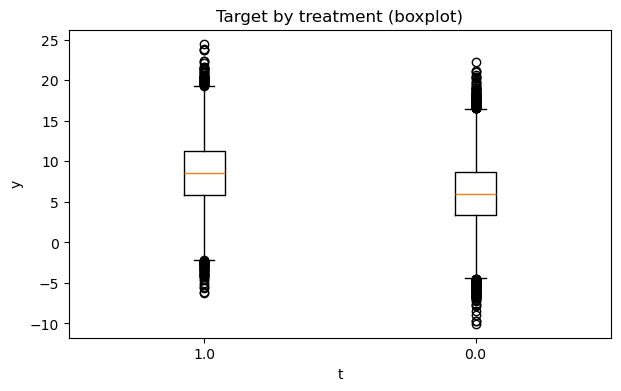

Scenario 1#
Is RCT |
Treatment |
Outcome |
EDA |
Estimands |
Refutation |
Docs, Examples |
Synthetic tests |
|---|---|---|---|---|---|---|---|
Observational |
Binary |
Continuous |
No |
No |
No |
No |
No |
Generate data#
import numpy as np
import pandas as pd
import matplotlib.pyplot as plt
from causalkit.data import CausalDatasetGenerator, CausalData
# Reproducibility
np.random.seed(42)
confounder_specs = [
{"name": "tenure_months", "dist": "normal", "mu": 24, "sd": 12},
{"name": "avg_sessions_week", "dist": "normal", "mu": 5, "sd": 2},
{"name": "spend_last_month", "dist": "uniform", "a": 0, "b": 200},
{"name": "premium_user", "dist": "bernoulli", "p": 0.25},
{"name": "urban_resident", "dist": "bernoulli", "p": 0.60},
]
# Causal effect and noise
theta = 1.8 # ATE: +1.8 ARPU units if new_feature = 1
sigma_y = 3.5 # ARPU noise std
target_t_rate = 0.35 # ~35% treated
# Effects of confounders on ARPU (baseline, additive)
# Order: tenure_months, avg_sessions_week, spend_last_month, premium_user, urban_resident
beta_y = np.array([
0.05, # tenure_months: small positive effect
0.40, # avg_sessions_week: strong positive effect
0.02, # spend_last_month: recent spend correlates with ARPU
2.00, # premium_user: premium users have higher ARPU
1.00, # urban_resident: urban users slightly higher ARPU
], dtype=float)
# Effects of confounders on treatment assignment (log-odds scale)
beta_t = np.array([
0.015, # tenure_months
0.10, # avg_sessions_week
0.002, # spend_last_month
0.75, # premium_user
0.30, # urban_resident: more likely to get the feature
], dtype=float)
gen = CausalDatasetGenerator(
theta=theta,
outcome_type="continuous",
sigma_y=sigma_y,
target_t_rate=target_t_rate,
seed=42,
confounder_specs=confounder_specs,
beta_y=beta_y,
beta_t=beta_t,
)
# Create dataset
causal_data = gen.to_causal_data(
n=50000,
cofounders = [
"tenure_months",
"avg_sessions_week",
"spend_last_month",
"premium_user",
"urban_resident",
]
)
# Show first few rows
causal_data.df.head()
---------------------------------------------------------------------------
ModuleNotFoundError Traceback (most recent call last)
Cell In[1], line 4
2 import pandas as pd
3 import matplotlib.pyplot as plt
----> 4 from causalkit.data import CausalDatasetGenerator, CausalData
6 # Reproducibility
7 np.random.seed(42)
File ~/work/CausalKit/CausalKit/causalkit/__init__.py:28
26 from causalkit import data
27 from causalkit import design
---> 28 from causalkit import inference
30 __version__ = "0.1.0"
31 __all__ = ["data", "design", "inference"]
File ~/work/CausalKit/CausalKit/causalkit/inference/__init__.py:11
9 from causalkit.inference.att.conversion_z_test import conversion_z_test
10 from causalkit.inference.att.bootstrap_diff_means import bootstrap_diff_means
---> 11 from causalkit.inference.ate.dml_ate import dml_ate as dml
12 from causalkit.inference.ate.causalforestdml import causalforestdml as causalforestdml
13 from causalkit.inference.att.dml_att import dml_att as dml_att
File ~/work/CausalKit/CausalKit/causalkit/inference/ate/__init__.py:7
1 """
2 Average Treatment Effect (ATE) inference methods for causalkit.
3
4 This module provides methods for estimating average treatment effects.
5 """
----> 7 from causalkit.inference.ate.dml_ate import dml_ate
8 from causalkit.inference.ate.causalforestdml import causalforestdml
10 __all__ = ['dml_ate', 'causalforestdml']
File ~/work/CausalKit/CausalKit/causalkit/inference/ate/dml_ate.py:13
10 from typing import Dict, Any, Optional, Union, List, Tuple
12 import doubleml as doubleml
---> 13 from catboost import CatBoostRegressor, CatBoostClassifier
14 from sklearn.ensemble import RandomForestRegressor, RandomForestClassifier
16 from causalkit.data.causaldata import CausalData
ModuleNotFoundError: No module named 'catboost'
EDA#
from causalkit.eda import CausalEDA
eda = CausalEDA(causal_data)
General#
eda.data_shape()
{'n_rows': 50000, 'n_columns': 7}
# 1) Comprehensive outcome statistics by treatment
# Provides detailed statistics including count, mean, std, min, percentiles, and max
eda.outcome_stats()
| count | mean | std | min | p10 | p25 | median | p75 | p90 | max | |
|---|---|---|---|---|---|---|---|---|---|---|
| treatment | ||||||||||
| 0.0 | 32599 | 6.030044 | 3.927121 | -10.036046 | 1.021363 | 3.409317 | 6.016423 | 8.654023 | 11.085462 | 22.216914 |
| 1.0 | 17401 | 8.545813 | 3.971549 | -6.248371 | 3.436976 | 5.852603 | 8.542448 | 11.223197 | 13.631587 | 24.516679 |
# 2) Outcome distribution by treatment (hist + boxplot) - using new outcome_plots() method
fig1, fig2 = eda.outcome_plots()
plt.show()


Confounders#
# Shows means for control/treated groups, absolute differences, and SMD values
confounders_balance_df = eda.confounders_means()
display(confounders_balance_df)
# NEW: PropensityModel - fit_propensity() now returns a PropensityModel with built-in methods
# The PropensityModel encapsulates propensity scores and provides diagnostic methods
ps_model = eda.fit_propensity()
# 1) ROC AUC - shows how predictable treatment is from confounders
roc_auc_score = ps_model.roc_auc
print("ROC AUC from PropensityModel:", round(roc_auc_score, 4))
# 2) Positivity check - assess overlap between treatment groups
positivity_result = ps_model.positivity_check()
print("Positivity check from PropensityModel:", positivity_result)
shap_values_df = ps_model.shap
display(shap_values_df)
ps_model.ps_graph()
plt.show()
| mean_t_0 | mean_t_1 | abs_diff | smd | |
|---|---|---|---|---|
| confounders | ||||
| premium_user | 0.199485 | 0.342509 | 0.143024 | 0.326023 |
| avg_sessions_week | 4.854119 | 5.227690 | 0.373571 | 0.186733 |
| tenure_months | 23.294194 | 25.303966 | 2.009772 | 0.167721 |
| urban_resident | 0.573116 | 0.637032 | 0.063917 | 0.131030 |
| spend_last_month | 97.853328 | 103.457644 | 5.604315 | 0.097330 |
ROC AUC from PropensityModel: 0.6121
Positivity check from PropensityModel: {'bounds': (0.05, 0.95), 'share_below': 0.00096, 'share_above': 0.0, 'flag': False}
| feature | shap_mean | |
|---|---|---|
| 0 | tenure_months | 0.000326 |
| 1 | avg_sessions_week | -0.000279 |
| 2 | spend_last_month | -0.000148 |
| 3 | premium_user | 0.000056 |
| 4 | urban_resident | 0.000045 |

Outcome#
# The OutcomeModel encapsulates outcome predictions and provides diagnostic methods
outcome_model = eda.outcome_fit()
# 1) Regression scores - shows how well we can predict the outcome from confounders only
print(outcome_model.scores)
# 2) SHAP values - feature importance for outcome prediction from confounders
shap_outcome_df = outcome_model.shap
display(shap_outcome_df)
{'rmse': 3.6348456765609427, 'mae': 2.893847375791019}
| feature | shap_mean | |
|---|---|---|
| 0 | avg_sessions_week | 0.000649 |
| 1 | tenure_months | -0.000342 |
| 2 | spend_last_month | -0.000305 |
| 3 | premium_user | -0.000061 |
| 4 | urban_resident | 0.000059 |
Inference#
# Import inference methods
from causalkit.inference.ate import dml_ate
from causalkit.inference.att import dml_att
# Estimate Average Treatment Effect (ATE)
ate_result = dml_ate(causal_data, n_folds=3, confidence_level=0.95)
ate_result
{'coefficient': 1.8047837219688228,
'std_error': 0.03568165113834074,
'p_value': 0.0,
'confidence_interval': (1.7348489708287522, 1.8747184731088933),
'model': <doubleml.irm.irm.DoubleMLIRM at 0x1632ef380>}
Refutation#
# Import refutation utilities
from causalkit.refutation import (
refute_placebo_outcome,
refute_placebo_treatment,
refute_subset,
refute_irm_orthogonality,
)
print("--- Placebo Outcome Test ---")
print("Shuffling outcome variable (breaking outcome-treatment link)")
print("Expected: θ ≈ 0, large p-value\n")
# Test with ATE estimator
ate_placebo_outcome = refute_placebo_outcome(
dml_ate,
causal_data,
random_state=42
)
print(f"ATE with shuffled outcome:")
print(f" θ = {ate_placebo_outcome['theta']:.4f}")
print(f" p-value = {ate_placebo_outcome['p_value']:.4f}")
--- Placebo Outcome Test ---
Shuffling outcome variable (breaking outcome-treatment link)
Expected: θ ≈ 0, large p-value
ATE with shuffled outcome:
θ = 0.0014
p-value = 0.4878
print("\n--- Placebo Treatment Test ---")
print("Shuffling treatment variable (breaking treatment-outcome link)")
print("Expected: θ ≈ 0, large p-value\n")
# Test with ATE estimator
ate_placebo_treatment = refute_placebo_treatment(
dml_ate,
causal_data,
random_state=42
)
print(f"ATE with shuffled treatment:")
print(f" θ = {ate_placebo_treatment['theta']:.4f}")
print(f" p-value = {ate_placebo_treatment['p_value']:.4f}")
--- Placebo Treatment Test ---
Shuffling treatment variable (breaking treatment-outcome link)
Expected: θ ≈ 0, large p-value
ATE with shuffled treatment:
θ = -0.0449
p-value = 0.1963
print("\n--- Subset Robustness Test ---")
print("Testing stability on random subsets of data")
print("Expected: θ similar to original estimate\n")
# Test multiple subset sizes
subset_fractions = [0.6, 0.8, 0.9]
print("ATE Subset Tests:")
print(f"Original ATE: {ate_result['coefficient']:.4f}")
ate_subset_results = []
for fraction in subset_fractions:
subset_result = refute_subset(
dml_ate,
causal_data,
fraction=fraction,
random_state=42
)
ate_subset_results.append(subset_result)
print(f" {fraction*100:.0f}% subset: θ = {subset_result['theta']:.4f}, p = {subset_result['p_value']:.4f}")
--- Subset Robustness Test ---
Testing stability on random subsets of data
Expected: θ similar to original estimate
ATE Subset Tests:
Original ATE: 1.8048
60% subset: θ = 1.8186, p = 0.0000
80% subset: θ = 1.8099, p = 0.0000
90% subset: θ = 1.8315, p = 0.0000
Orthogonality#
ate_ortho_check = refute_irm_orthogonality(dml_ate, causal_data, n_folds=3)
ate_ortho_check
{'theta': 1.8018642155181877,
'params': {'target': 'ATE',
'clip_eps': 0.01,
'strict_oos_requested': False,
'strict_oos_applied': False},
'oos_moment_test': {'fold_results': fold n psi_mean psi_var
0 0 10000 -0.041580 63.689179
1 1 10000 0.123151 60.082212
2 2 10000 0.095555 64.122321
3 3 10000 -0.105544 62.945267
4 4 10000 -0.090244 63.587698,
'tstat': -0.10525083126795791,
'pvalue': 0.916176777153225,
'interpretation': 'Should be ≈ 0 if moment condition holds'},
'orthogonality_derivatives': {'full_sample': basis d_m1 se_m1 t_m1 d_m0 se_m0 t_m0 \
0 0 -0.020920 0.006928 -3.019624 0.005909 0.003471 1.702466
1 1 0.005269 0.008004 0.658313 0.002757 0.003614 0.762900
2 2 0.006662 0.007934 0.839665 0.002033 0.003586 0.566894
d_g se_g t_g
0 -0.057769 0.131319 -0.439910
1 0.189448 0.190462 0.994678
2 0.100489 0.186679 0.538298 ,
'trimmed_sample': basis d_m1 se_m1 t_m1 d_m0 se_m0 t_m0 \
0 0 -0.019685 0.006817 -2.887516 0.005929 0.003471 1.708257
1 1 0.002087 0.007344 0.284201 0.002706 0.003614 0.748729
2 2 0.003930 0.007449 0.527634 0.001989 0.003586 0.554612
d_g se_g t_g
0 -0.038635 0.129920 -0.297375
1 0.140192 0.183986 0.761973
2 0.058204 0.181830 0.320098 ,
'problematic_full': basis d_m1 se_m1 t_m1 d_m0 se_m0 t_m0 d_g \
0 0 -0.02092 0.006928 -3.019624 0.005909 0.003471 1.702466 -0.057769
se_g t_g
0 0.131319 -0.43991 ,
'problematic_trimmed': basis d_m1 se_m1 t_m1 d_m0 se_m0 t_m0 \
0 0 -0.019685 0.006817 -2.887516 0.005929 0.003471 1.708257
d_g se_g t_g
0 -0.038635 0.12992 -0.297375 ,
'interpretation': 'Large |t-stats| (>2) indicate calibration issues'},
'influence_diagnostics': {'full_sample': {'se_plugin': 0.03546447121592381,
'kurtosis': 8.916919291482913,
'p99_over_med': 6.072948157376655,
'top_influential': i psi g res_t res_c
0 20387 136.241190 0.085617 11.977468 0.0
1 24643 76.577955 0.111867 8.768497 0.0
2 34037 -74.076646 0.088655 -6.537696 -0.0
3 7960 -73.599099 0.110099 -8.319739 -0.0
4 13297 73.497787 0.136394 10.001563 0.0
5 6848 -69.020979 0.152402 -10.746125 -0.0
6 10815 67.332351 0.157869 10.569262 0.0
7 9047 -64.997905 0.075897 -4.941403 -0.0
8 236 64.839614 0.109513 7.260651 0.0
9 16095 -64.579329 0.091667 -5.991942 -0.0},
'trimmed_sample': {'se_plugin': 0.03546424720032873,
'kurtosis': 8.917552900502693,
'p99_over_med': 6.073018677510254,
'top_influential': i psi g res_t res_c
0 20387 136.241190 0.085617 11.977468 0.0
1 24643 76.577955 0.111867 8.768497 0.0
2 34037 -74.076646 0.088655 -6.537696 -0.0
3 7960 -73.599099 0.110099 -8.319739 -0.0
4 13297 73.497787 0.136394 10.001563 0.0
5 6848 -69.020979 0.152402 -10.746125 -0.0
6 10815 67.332351 0.157869 10.569262 0.0
7 9047 -64.997905 0.075897 -4.941403 -0.0
8 236 64.839614 0.109513 7.260651 0.0
9 16095 -64.579329 0.091667 -5.991942 -0.0},
'interpretation': 'Heavy tails or extreme kurtosis suggest instability'},
'trimming_info': {'bounds': (0.02, 0.98),
'n_trimmed': 1,
'pct_trimmed': 0.002},
'diagnostic_conditions': {'oos_moment_ok': True,
'derivs_full_ok': False,
'derivs_trim_ok': False,
'se_reasonable': True,
'no_extreme_influence': True,
'trimming_reasonable': True},
'overall_assessment': 'CAUTION: Most conditions satisfied'}
# 1. Out-of-sample moment check
print("\n--- 1. Out-of-Sample Moment Check ---")
oos_test = ate_ortho_check['oos_moment_test']
print(f"T-statistic: {oos_test['tstat']:.4f}")
print(f"P-value: {oos_test['pvalue']:.4f}")
print(f"Interpretation: {oos_test['interpretation']}")
print("\nFold-wise results:")
display(oos_test['fold_results'])
--- 1. Out-of-Sample Moment Check ---
T-statistic: -0.1053
P-value: 0.9162
Interpretation: Should be ≈ 0 if moment condition holds
Fold-wise results:
| fold | n | psi_mean | psi_var | |
|---|---|---|---|---|
| 0 | 0 | 10000 | -0.041580 | 63.689179 |
| 1 | 1 | 10000 | 0.123151 | 60.082212 |
| 2 | 2 | 10000 | 0.095555 | 64.122321 |
| 3 | 3 | 10000 | -0.105544 | 62.945267 |
| 4 | 4 | 10000 | -0.090244 | 63.587698 |
# 2. Orthogonality derivatives
print("\n--- 2. Orthogonality (Gateaux Derivative) Tests ---")
ortho_derivs = ate_ortho_check['orthogonality_derivatives']
print(f"Interpretation: {ortho_derivs['interpretation']}")
print("\nFull sample derivatives:")
display(ortho_derivs['full_sample'])
print("\nTrimmed sample derivatives:")
display(ortho_derivs['trimmed_sample'])
if len(ortho_derivs['problematic_full']) > 0:
print("\n⚠ PROBLEMATIC derivatives (full sample):")
display(ortho_derivs['problematic_full'])
else:
print("\n✓ No problematic derivatives in full sample")
if len(ortho_derivs['problematic_trimmed']) > 0:
print("\n⚠ PROBLEMATIC derivatives (trimmed sample):")
display(ortho_derivs['problematic_trimmed'])
else:
print("\n✓ No problematic derivatives in trimmed sample")
--- 2. Orthogonality (Gateaux Derivative) Tests ---
Interpretation: Large |t-stats| (>2) indicate calibration issues
Full sample derivatives:
| basis | d_m1 | se_m1 | t_m1 | d_m0 | se_m0 | t_m0 | d_g | se_g | t_g | |
|---|---|---|---|---|---|---|---|---|---|---|
| 0 | 0 | -0.020920 | 0.006928 | -3.019624 | 0.005909 | 0.003471 | 1.702466 | -0.057769 | 0.131319 | -0.439910 |
| 1 | 1 | 0.005269 | 0.008004 | 0.658313 | 0.002757 | 0.003614 | 0.762900 | 0.189448 | 0.190462 | 0.994678 |
| 2 | 2 | 0.006662 | 0.007934 | 0.839665 | 0.002033 | 0.003586 | 0.566894 | 0.100489 | 0.186679 | 0.538298 |
Trimmed sample derivatives:
| basis | d_m1 | se_m1 | t_m1 | d_m0 | se_m0 | t_m0 | d_g | se_g | t_g | |
|---|---|---|---|---|---|---|---|---|---|---|
| 0 | 0 | -0.019685 | 0.006817 | -2.887516 | 0.005929 | 0.003471 | 1.708257 | -0.038635 | 0.129920 | -0.297375 |
| 1 | 1 | 0.002087 | 0.007344 | 0.284201 | 0.002706 | 0.003614 | 0.748729 | 0.140192 | 0.183986 | 0.761973 |
| 2 | 2 | 0.003930 | 0.007449 | 0.527634 | 0.001989 | 0.003586 | 0.554612 | 0.058204 | 0.181830 | 0.320098 |
⚠ PROBLEMATIC derivatives (full sample):
| basis | d_m1 | se_m1 | t_m1 | d_m0 | se_m0 | t_m0 | d_g | se_g | t_g | |
|---|---|---|---|---|---|---|---|---|---|---|
| 0 | 0 | -0.02092 | 0.006928 | -3.019624 | 0.005909 | 0.003471 | 1.702466 | -0.057769 | 0.131319 | -0.43991 |
⚠ PROBLEMATIC derivatives (trimmed sample):
| basis | d_m1 | se_m1 | t_m1 | d_m0 | se_m0 | t_m0 | d_g | se_g | t_g | |
|---|---|---|---|---|---|---|---|---|---|---|
| 0 | 0 | -0.019685 | 0.006817 | -2.887516 | 0.005929 | 0.003471 | 1.708257 | -0.038635 | 0.12992 | -0.297375 |
# 3. Influence diagnostics
print("\n--- 3. Influence Diagnostics ---")
influence = ate_ortho_check['influence_diagnostics']
print(f"Interpretation: {influence['interpretation']}")
print("\nFull sample influence metrics:")
print(f" Plugin SE: {influence['full_sample']['se_plugin']:.4f}")
print(f" Kurtosis: {influence['full_sample']['kurtosis']:.2f}")
print(f" P99/Median ratio: {influence['full_sample']['p99_over_med']:.2f}")
print("\nTrimmed sample influence metrics:")
print(f" Plugin SE: {influence['trimmed_sample']['se_plugin']:.4f}")
print(f" Kurtosis: {influence['trimmed_sample']['kurtosis']:.2f}")
print(f" P99/Median ratio: {influence['trimmed_sample']['p99_over_med']:.2f}")
print("\nTop influential observations (full sample):")
display(influence['full_sample']['top_influential'])
--- 3. Influence Diagnostics ---
Interpretation: Heavy tails or extreme kurtosis suggest instability
Full sample influence metrics:
Plugin SE: 0.0355
Kurtosis: 8.92
P99/Median ratio: 6.07
Trimmed sample influence metrics:
Plugin SE: 0.0355
Kurtosis: 8.92
P99/Median ratio: 6.07
Top influential observations (full sample):
| i | psi | g | res_t | res_c | |
|---|---|---|---|---|---|
| 0 | 20387 | 136.241190 | 0.085617 | 11.977468 | 0.0 |
| 1 | 24643 | 76.577955 | 0.111867 | 8.768497 | 0.0 |
| 2 | 34037 | -74.076646 | 0.088655 | -6.537696 | -0.0 |
| 3 | 7960 | -73.599099 | 0.110099 | -8.319739 | -0.0 |
| 4 | 13297 | 73.497787 | 0.136394 | 10.001563 | 0.0 |
| 5 | 6848 | -69.020979 | 0.152402 | -10.746125 | -0.0 |
| 6 | 10815 | 67.332351 | 0.157869 | 10.569262 | 0.0 |
| 7 | 9047 | -64.997905 | 0.075897 | -4.941403 | -0.0 |
| 8 | 236 | 64.839614 | 0.109513 | 7.260651 | 0.0 |
| 9 | 16095 | -64.579329 | 0.091667 | -5.991942 | -0.0 |
# Trimming information
print("\n--- Propensity Score Trimming ---")
trim_info = ate_ortho_check['trimming_info']
print(f"Trimming bounds: {trim_info['bounds']}")
print(f"Observations trimmed: {trim_info['n_trimmed']} ({trim_info['pct_trimmed']:.1f}%)")
--- Propensity Score Trimming ---
Trimming bounds: (0.02, 0.98)
Observations trimmed: 1 (0.0%)
# Diagnostic conditions breakdown
print("\n--- Diagnostic Conditions Assessment ---")
conditions = ate_ortho_check['diagnostic_conditions']
print("Individual condition checks:")
for condition, passed in conditions.items():
status = "✓ PASS" if passed else "✗ FAIL"
print(f" {condition}: {status}")
print(f"\nOverall: {ate_ortho_check['overall_assessment']}")
--- Diagnostic Conditions Assessment ---
Individual condition checks:
oos_moment_ok: ✓ PASS
derivs_full_ok: ✗ FAIL
derivs_trim_ok: ✗ FAIL
se_reasonable: ✓ PASS
no_extreme_influence: ✓ PASS
trimming_reasonable: ✓ PASS
Overall: CAUTION: Most conditions satisfied
# Also test with ATT estimation for comparison
print("\n--- ATT Orthogonality Diagnostics (Summary) ---")
att_ortho_check = refute_irm_orthogonality(dml_att, causal_data, n_folds=3)
print(f"ATT estimate: {att_ortho_check['theta']:.4f}")
print(f"OOS moment t-stat: {att_ortho_check['oos_moment_test']['tstat']:.4f}")
print(f"Problematic derivatives (full): {len(att_ortho_check['orthogonality_derivatives']['problematic_full'])}")
print(f"Problematic derivatives (trimmed): {len(att_ortho_check['orthogonality_derivatives']['problematic_trimmed'])}")
print(f"Influence SE: {att_ortho_check['influence_diagnostics']['full_sample']['se_plugin']:.4f}")
print(f"Assessment: {att_ortho_check['overall_assessment']}")
--- ATT Orthogonality Diagnostics (Summary) ---
ATT estimate: 1.7752
OOS moment t-stat: 0.1340
Problematic derivatives (full): 1
Problematic derivatives (trimmed): 1
Influence SE: 0.0355
Assessment: CAUTION: Most conditions satisfied
# Interpretation guide for new diagnostics
print("\n--- New Diagnostics Interpretation Guide ---")
print("🔍 OUT-OF-SAMPLE MOMENT CHECK:")
print(" - T-stat ≈ 0 (|t| < 2): ✓ Moment condition satisfied")
print(" - Large |t-stat| (|t| > 2): ⚠ Potential moment condition violation")
print(" - This avoids tautological results by testing on held-out data")
print("\n🔍 ORTHOGONALITY DERIVATIVES:")
print(" - |t-stats| < 2 for all basis functions: ✓ Good calibration")
print(" - Large |t-stats| (>2) for constant (basis=0): ⚠ Calibration issues")
print(" * t_m1 large: Treated outcome model miscalibrated")
print(" * t_m0 large: Control outcome model miscalibrated")
print(" * t_g large: Propensity model miscalibrated")
print(" - Large |t-stats| for covariates: ⚠ Covariate-specific issues")
print("\n🔍 INFLUENCE DIAGNOSTICS:")
print(" - Plugin SE similar to DoubleML SE: ✓ Consistent uncertainty quantification")
print(" - Low kurtosis (<10): ✓ Stable influence function")
print(" - P99/Median ratio <10: ✓ No extreme influential observations")
print(" - High kurtosis or extreme ratios: ⚠ Unstable estimates")
print("\n📊 ACTIONABLE INSIGHTS:")
print(" - Large derivatives → Revisit ML models, add regularization")
print(" - High influence metrics → Check for outliers, consider trimming")
print(" - Failed OOS moment → Potential fundamental misspecification")
print(" - Multiple failures → Consider different estimation approach")
--- New Diagnostics Interpretation Guide ---
🔍 OUT-OF-SAMPLE MOMENT CHECK:
- T-stat ≈ 0 (|t| < 2): ✓ Moment condition satisfied
- Large |t-stat| (|t| > 2): ⚠ Potential moment condition violation
- This avoids tautological results by testing on held-out data
🔍 ORTHOGONALITY DERIVATIVES:
- |t-stats| < 2 for all basis functions: ✓ Good calibration
- Large |t-stats| (>2) for constant (basis=0): ⚠ Calibration issues
* t_m1 large: Treated outcome model miscalibrated
* t_m0 large: Control outcome model miscalibrated
* t_g large: Propensity model miscalibrated
- Large |t-stats| for covariates: ⚠ Covariate-specific issues
🔍 INFLUENCE DIAGNOSTICS:
- Plugin SE similar to DoubleML SE: ✓ Consistent uncertainty quantification
- Low kurtosis (<10): ✓ Stable influence function
- P99/Median ratio <10: ✓ No extreme influential observations
- High kurtosis or extreme ratios: ⚠ Unstable estimates
📊 ACTIONABLE INSIGHTS:
- Large derivatives → Revisit ML models, add regularization
- High influence metrics → Check for outliers, consider trimming
- Failed OOS moment → Potential fundamental misspecification
- Multiple failures → Consider different estimation approach
# Import sensitivity analysis functions
from causalkit.refutation import sensitivity_analysis, get_sensitivity_summary
print("--- Basic Sensitivity Analysis ---")
print("Testing robustness to unobserved confounding\n")
# Perform sensitivity analysis with moderate confounding assumptions
print("Scenario 1: Moderate unobserved confounding")
print("cf_y=0.03 (outcome confounding), cf_d=0.03 (treatment confounding)")
try:
# Run sensitivity analysis on our ATE result
sensitivity_report_1 = sensitivity_analysis(
ate_result,
cf_y=0.03, # Confounding strength affecting outcome
cf_d=0.03, # Confounding strength affecting treatment
rho=1.0 # Perfect correlation between unobserved confounders
)
print(sensitivity_report_1)
except Exception as e:
print(f"Note: Sensitivity analysis requires the model object to support it.")
print(f"Error: {e}")
print("\nThis feature works best with DoubleML models that have sensitivity analysis capabilities.")
--- Basic Sensitivity Analysis ---
Testing robustness to unobserved confounding
Scenario 1: Moderate unobserved confounding
cf_y=0.03 (outcome confounding), cf_d=0.03 (treatment confounding)
================== Sensitivity Analysis ==================
------------------ Scenario ------------------
Significance Level: level=0.95
Sensitivity parameters: cf_y=0.03; cf_d=0.03, rho=1.0
------------------ Bounds with CI ------------------
CI lower theta lower theta theta upper CI upper
t 1.514031 1.572741 1.804784 2.036826 2.095547
------------------ Robustness Values ------------------
H_0 RV (%) RVa (%)
t 0.0 21.050746 20.430468